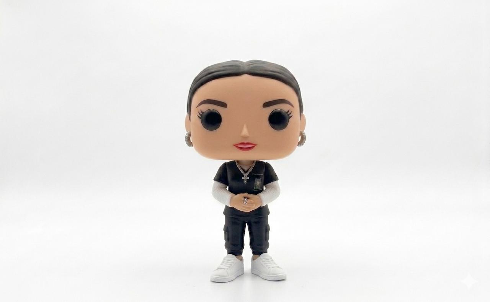

Explora recursos educativos, actividades visuales y herramientas inclusivas diseñadas para promover un aprendizaje accesible, tranquilo e interactivo.
Posters educativos y material visual para aprender fácilmente.
Figuras Literarias Elementos de la Poesía Figuras RetóricasMaterial pensado para comprender y apoyar la neurodivergencia.
Entrevista Escolar